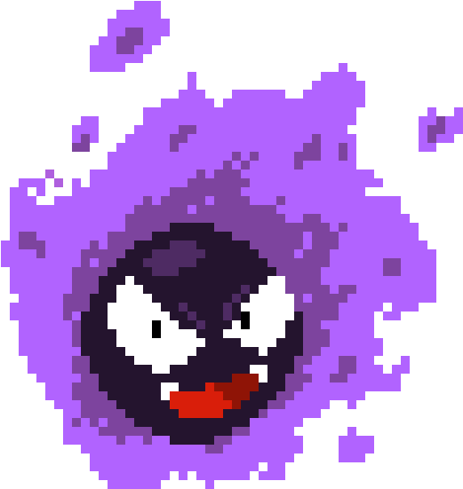

JavaScript es un lenguaje de programación interpretado, orientado a objetos y de alto nivel. Es el motor fundamental de la interactividad en la web moderna, permitiendo transformar páginas estáticas en aplicaciones dinámicas y reactivas a las acciones del usuario.
En JavaScript moderno, las variables se declaran utilizando let (para valores que pueden
cambiar) y const (para valores constantes). Los tipos de datos principales incluyen:
Cadenas (Strings), Números (Numbers), Booleanos (Booleans), Objetos (Objects) y Arreglos (Arrays).
// Declaración de variables modernas
const nombre Estudiante = "MJ Watson";
let edad = 20;
let esAprobado = true;
// Objetos y Arreglos complejos
const notas = [95, 88, 100];
const curso = { nombre: "Programación IV", periodo: "2026" };
El DOM es la estructura de árbol que representa el documento HTML. JavaScript permite acceder, modificar, añadir o eliminar elementos del DOM dinámicamente utilizando métodos de selección.
| Método de Selección | Descripción / Función |
|---|---|
document.getElementById("id") |
Selecciona un único elemento basado en su atributo ID único. |
document.querySelector(".clase") |
Selecciona el primer elemento que coincida con el selector CSS provisto. |
document.createElement("etiqueta") |
Crea dinámicamente un nuevo elemento HTML en memoria. |
// Ejemplo: Crear y agregar un elemento al HTML desde JS
const tablero = document.getElementById("game-board");
const nuevaCelda = document.createElement("div");
nuevaCelda.classList.add("cell", "wall"); // Asigna clases de CSS
tablero.appendChild(nuevaCelda); // Inserta el elemento en la interfaz
Los eventos permiten capturar las acciones del usuario (clicks, presionar teclas, movimientos del
mouse). Junto con las funciones de temporización (como setInterval), permiten crear
dinámicas en tiempo real.
Esencial para detectar el movimiento del jugador mediante periféricos.
//Evento de Teclado: Captura la pulsación de teclas para mover al personaje
document.addEventListener("keydown", (event) => {
if (event.key === "ArrowUp") {
console.log("Mover personaje hacia arriba");
}
});
//Evento de Tiempo: Ejecuta una función cada cierto intervalo de tiempo
// Mueve a los enemigos automáticamente cada 400ms
setInterval(moverEnemigosAleatorios, 400);

Para añadir interactividad, JavaScript escucha diferentes tipos de eventos disparados por el usuario o por el navegador. A continuación se detallan los más importantes clasificados por su origen:
| Evento | Descripción |
|---|---|
click |
Se dispara al presionar y soltar el botón principal del ratón sobre un elemento. |
dblclick |
Se dispara al hacer doble clic rápidamente sobre un elemento. |
mousedown |
Se dispara en el instante exacto en que se presiona un botón del ratón. |
mouseup |
Se dispara en el instante exacto en que se suelta un botón del ratón. |
mousemove |
Se dispara continuamente mientras el puntero del ratón se mueve dentro de un elemento. |
mouseenter |
Se dispara cuando el puntero entra en los límites de un elemento (no aplica a sus hijos). |
mouseleave |
Se dispara cuando el puntero sale de los límites de un elemento. |
mouseover |
Similar a mouseenter, pero se dispara también cuando el puntero entra en los elementos hijos. |
mouseout |
Similar a mouseleave, pero también reacciona ante los elementos hijos. |
contextmenu |
Se dispara al hacer clic derecho, justo antes de que aparezca el menú contextual. |
| Evento | Descripción |
|---|---|
keydown |
Se dispara en el instante en que el usuario presiona una tecla. |
keyup |
Se dispara cuando el usuario suelta la tecla previamente presionada. |
| Evento | Descripción |
|---|---|
focus |
Se dispara cuando un elemento (como un input) recibe el foco para interactuar con él. |
blur |
Se dispara cuando un elemento pierde el foco (por ejemplo, al hacer clic fuera del input). |
change |
Se dispara cuando el valor de un elemento <input>,
<select> o <textarea> cambia y además
pierde el foco.
|
select |
Se dispara cuando el usuario selecciona texto dentro de un campo de texto (input o textarea). |
| Evento | Descripción |
|---|---|
DOMContentLoaded |
Se dispara (en el document) cuando el HTML ha sido completamente
cargado y analizado, sin esperar a hojas de estilo o imágenes. |
load |
Se dispara cuando toda la página y sus recursos dependientes (imágenes, estilos) han terminado de cargar por completo. |
resize |
Se dispara continuamente cuando el usuario cambia las dimensiones de la ventana del navegador. |
scroll |
Se dispara al mover la barra de desplazamiento de un elemento específico o de la ventana entera. |
beforeunload |
Se dispara justo antes de que la ventana, el documento y sus recursos comiencen a descargarse (útil para diálogos de "guardar cambios"). |
unload |
Se dispara cuando el documento o un elemento hijo se está descargando (la página se cierra). |
Toda la teoría expuesta arriba (estructuras de datos matriciales, captura del teclado con
keydown, renderizado dinámico mediante el DOM y bucles de juego controlados por intervalos)
se unifica para dar vida al juego de Pac-Man desarrollado para este repositorio.